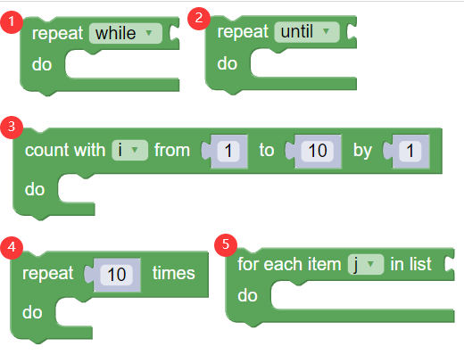

知识点教学安排
Blockly
Python Code
点击运行可以看到结果哦
点击运行可以看到结果哦
总所周知，安排教学是一个需要细细考量的活。
一个知识点的教导安排要关注到先修知识。
显然我们需要安排的教学计划力求教导这个知识点前，这个知识点需要的先修知识点都教过啦。
如果我们能够找到一个教学计划满足上面条件，我们称这个计划是优秀的。
现在给定一张知识点清单和知识点间的关系(详细见本题用例)，请编写程序找到一个优秀的清单。
了解循环，掌握python的循环语法，包括while和for-each两种。
1.开开会，了解一下目的，搜集下资料
2.整理一下这些知识点之间的关系
3.对知识点进行划分，分成可以立即教导的和不能立即教导的知识点，并获得可以立即教导的知识点
4.看看有没有可以立即教导的知识点，也就是检查一下刚刚获得的知识点集合是不是空集
可是，刚刚获得的知识点集合是哪一个呢，我们是不是应该为他取个名字？不如就叫enable_dict
5.枚举每一个能够教导的知识点
6.处理每一个能教的知识点
7.把能教的所有都安排上
8.对剩下的知识点进行划分，分成能可以立即教和不能立即教的
....不断重复这个操作直到没有可以立即教的
我们做完啦
在上面这个做法中，我们提到了"不断重复"和"能教导的所有"这个词，这两个词的出现往往意味着出现了循环操作。
循环语句允许我们执行一个语句或语句组多次。
基本上，所有的主流语言都支持循环，我们通过blockly来了解循环的共性：
blockly看上去为我们提供了很多的循环：
第一种为当条件满足时重复执行，第二种为反复执行直到条件不满足，判断依据都是条件
第三种，第四种，第五种都是提前计算重复次数。
事实上，我们完全可以使用前两种方式替换后三种,而第一种和第二种之间可以相互转化。
主流的语言都支持循环语法，但为了帮助我们更好的阅读和编写代码，有些语言提供了更多的语法支持，但正如上面的描述，其实一种就够了。
Python 提供了 while 循环和 for 循环
Python 编程中 while 语句用于循环执行程序，即在某条件下，循环执行某段程序，以处理需要重复处理的相同任务。
Python 里 while 的基本形式:
while 判断条件(condition)：
执行语句(statements)……
Python for循环可以遍历任何序列的项目，如一个列表或者一个字符串。
Python 里 for 的基本形式:
for iterating_var in sequence:
statements(s)
这张图非常容易看出[1,4,7,2,3,5,8,6,9]是一个优秀的清单。
但是:
当要处理的知识点数量更多的时候
当处理的数目更多的时候
当其他问题其实本质相同的时候
程序，可以:一劳永逸